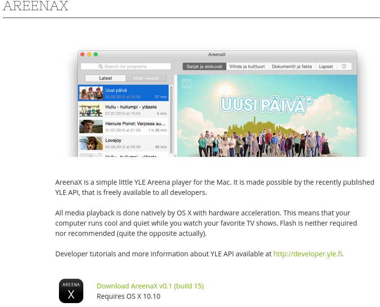

Modern Finnish Enterprise Level Microservices @Yle
By Markus Hjort / mhjort
Agenda
- Microservices W00T?
- Why @Yle
- In practice @Yle
Microservice???


Predictable
Unpredictable

Open
Legacy
"CMSmatrix lets you EASILY compare the features in over 1200!!! content management system products."
www.cmsmatrix.org